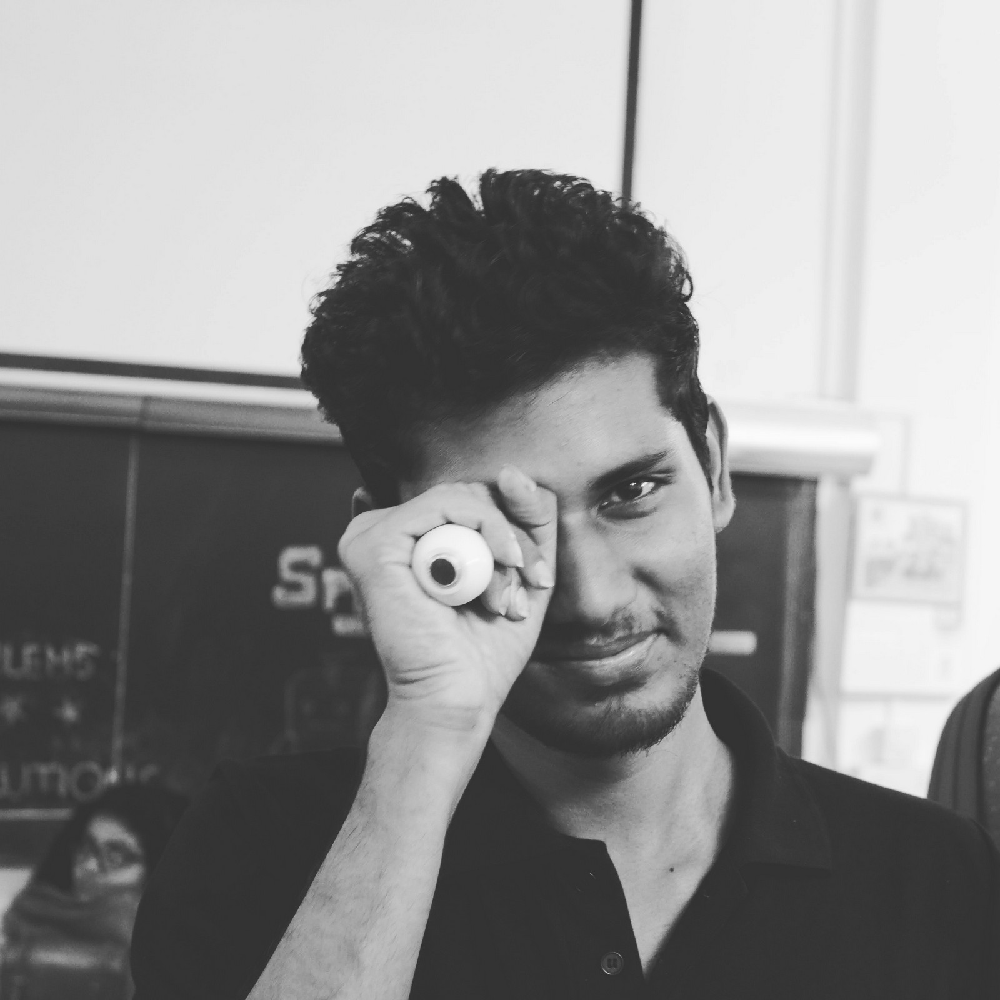
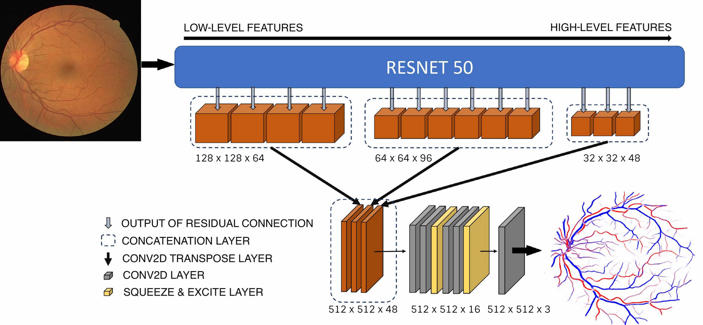
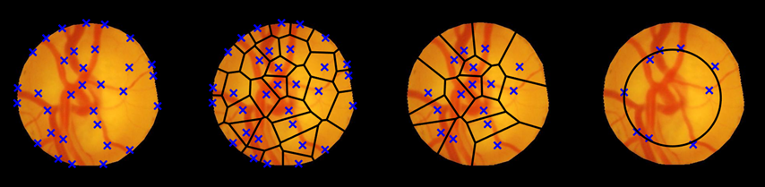
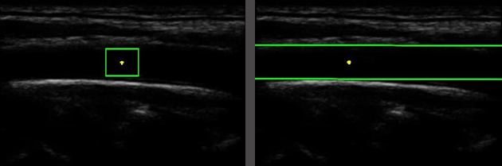

Looking for PhD position, if my profile interests you please contact me!!
I am a Master student studying Visual Computing at Saarland University working on 3D Reconstruction supervisied by Eddy Ilg and Jan Eric Lennsen.
Previously, I was a Research Assistant at Spectrum Lab, IISc, India under the supervision of Chandra Sekhar.
computer graphics · neural representations · geometry learning · computer vision
Publications

Automatic Classification of Artery-Vein from a Single Wavelength Fundus Images
P. Kevin Raj, Aniketh Manjunath, J.R.H. Kumar, Chandra S. SeelamantulaIEEE International Symposium on Biomedical Imaging (ISBI), Iowa, USA., 2020

A Structure Tensor based Voronoi Decomposition Technique for Optic Cup Segmentation
P. Kevin Raj, J.R.H Kumar, S. Jois, S. Harsha, Chandra S. SeelamantulaIEEE International Conference on Image Processing (ICIP), Taipei, Taiwan., 2019

Automatic Segmentation of Common Carotid Artery in Longitudinal Mode Ultrasound Images Using Active Oblongs
J.R.H. Kumar, K. Teotia, P. Kevin Raj, A. Jasbon, K.V. Rajagopal, Chandra S. SeelamantulaIEEE International Conference on Acoustics, Speech and Signal Processing (ICASSP), Brighton, UK., 2019